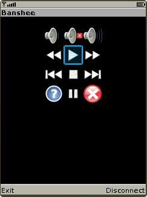
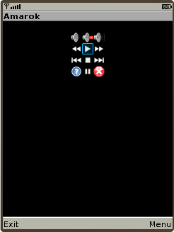
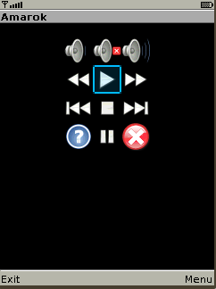

Set(icons ...) command and available icon set
|
 This command used tune view of the control (main) screen of J2ME/Android clients. FormatSet(icons, _title_, [button#, icon_name]*) Usage1=Set(icons,TheTitle,1,vol_down,2,mute,\ 3,vol_up,4,rewind,9,next,\ *,question,#,pause); The word SAME can be used instead of title if there are no needs to change existing title. |
Icon set
This is a set of icons which shipped with J2ME/Android clients and can be used by Set(icons ...) command:
| Icon set | ||||||||
|---|---|---|---|---|---|---|---|---|
click_icon |
default |
down |
file |
fit |
folder |
forward |
fullscreen |
left |
minus |
mute |
next |
no |
pause |
play |
plus |
prev |
question |
rewind |
refresh |
right |
stop |
up |
vol_down |
vol_up |
||
Uploading icons
In addition to this icon set it is possible to upload 16x16, 32x32, 48x48, 64x64 and 128x128 PNG icons from the PC with Set(image,icon ...).
Icon auto-uploading
If there is a command
1=Set(icons,TheTitle,1,my-new-icon);
and my-new-icon.png is absent in anyRemote client, then anyRemote will search it in $(CfgDir)/Icons/_icon_size_ directory and automatially upload it to the phone if found (_icon_size_ can be 16,32 or 64).
It is not recommended to use this feature on Samsung's because of terrible upload speed.
This is an additional set of icons which shipped with anyRemote and can be used by Set(icons ...) command:
| Additional icon set | |||||
|---|---|---|---|---|---|
bottom |
eject |
exit |
favorites |
first |
info |
last |
launch |
ok |
record |
top |
|
Icons size
If J2ME contains all icon sets then if heigth of the screen is less than
- 220pt. then 16x16 icons will be used by default
- 280pt. then 32x32 icons will be used by default
- 340pt. then 48x48 icons will be used by default
- 400pt. then 64x64 icons will be used by default
- 600pt. then 96x96 icons will be used by default
- overwise 128x128 icons will be used by default
It is possible to change icon size with Set(parameter,icon_size,...) command.
|  |  |
Note: to make this command work it needs to use J2ME client which supports specified icon set.